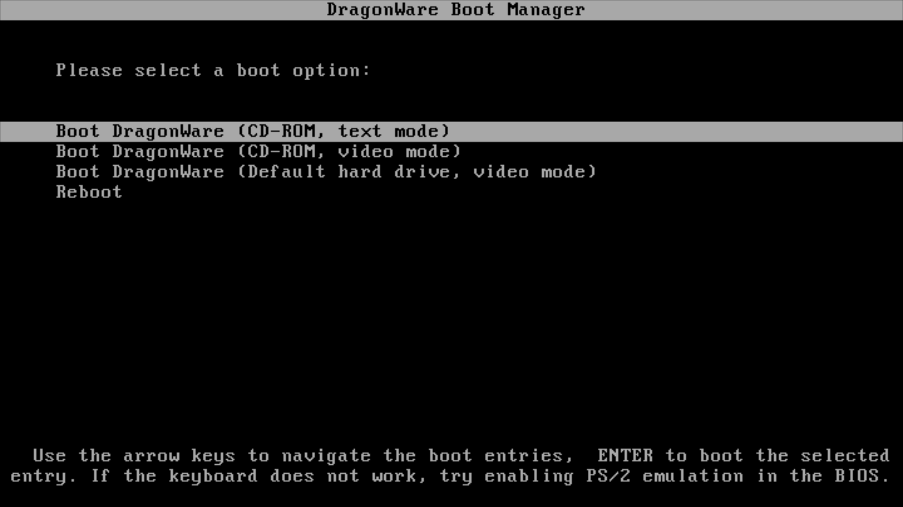
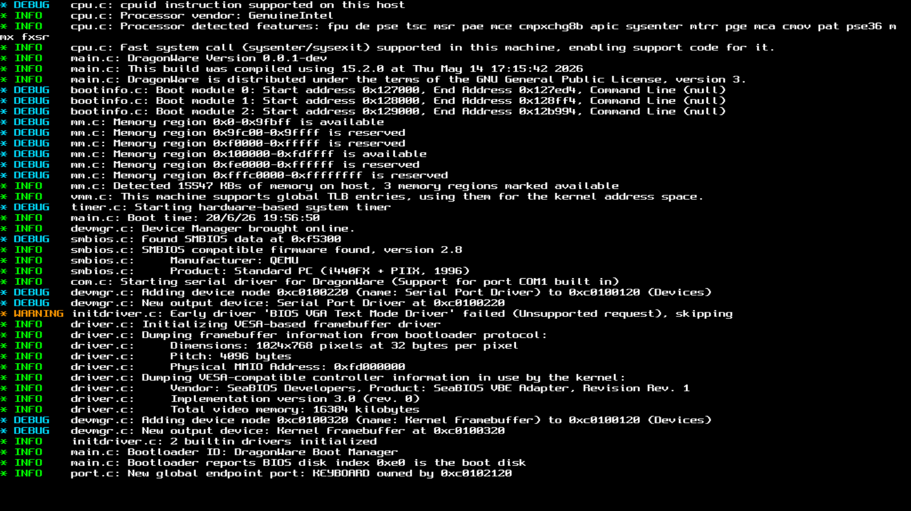
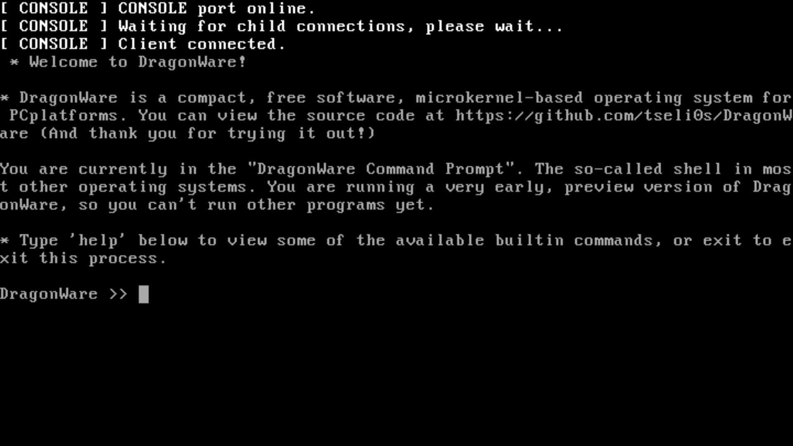

Below are some pictures of DragonWare. These are intended to give you a feel of what DragonWare actually
looks like in
practice, and overall give you something to look at because looking at pictures is something us humans
like to do.
All of the pictures here are from emulators. While DragonWare can boot on real PCs, taking a
screenshot from
real hardware is impossible at the moment.

The DragonWare Boot Manager, the bootloader for DragonWare.

Boot messages from the DragonWare microkernel in video mode (1024x768@32).

DragonWare running in QEMU, with the command prompt and microkernel servers
ready.